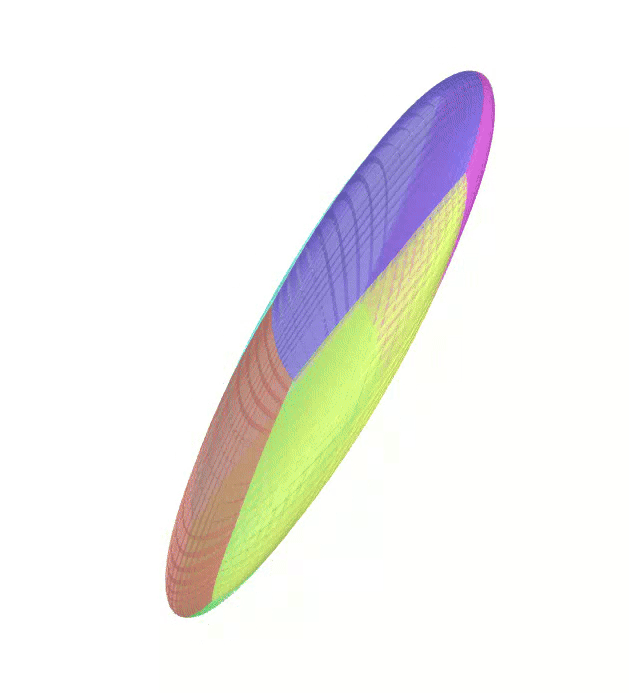
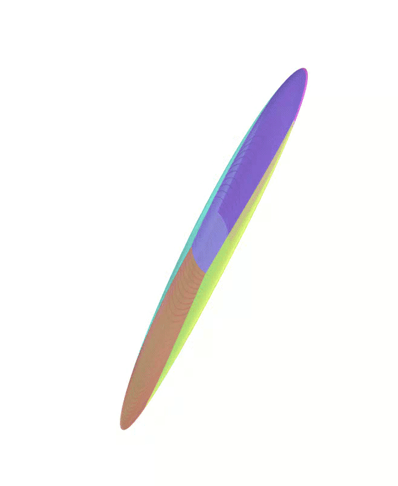

We are currently working on the implementation of PEIBOS directly in the CODAC library. Please stay tuned for updates!
Objective
PEIBOS is a C++ library that provides a simple and efficient way to compute the Parallelepipedic Enclosure of the Image of the BOundary of a Set. All the source code is available on this repository.
As this library requires both the CAPD and the CODAC (version 2) libraries, the main functions are provided below for any user to adapt them to their own needs.
Considering an initial set \(X_0\), two main use cases are treated by PEIBOS:
- Considering a function \(f\), compute the set \( Y = \{f(x) \mid x \in X_0\ \} \).
- Considering a dynamical equation \( \dot{x} = \gamma(x) \) and a time \( t \), compute the set \( X_t = \{x(t) \mid x(0) \in X_0\} \).
Case 1
Consider the unit sphere as initial set and the function:
\[ f(x) = \begin{pmatrix} y_1^2 - y_2^2 + y_1 \\ 2y_1y_2 + y_2 \\ y_3 \end{pmatrix} \]
The Atlas used by PEIBOS and the result the computation are shown below:


The PEIBOS function called in this case is:
vector<Parallelepiped> PEIBOS(const AnalyticFunction<VectorType>& f, const AnalyticFunction<VectorType>& psi_0, const vector<vector<int>>& generators , double epsilon, const Vector& offset, bool display = false)
{
Index m = psi_0.input_size();
Index n = psi_0.output_size();
clock_t t_start = clock();
vector<Parallelepiped> output;
// Generate the symmetries from the generators
vector<OctaSym> symmetries = generate_symmetries(generators, psi_0);
vector<IntervalVector> boxes;
double true_eps = split(Interval(-1.,1.)*IntervalVector::Ones(m), epsilon, boxes);
double index = 0.;
for (const auto& symmetry : symmetries)
{
for (const auto& X : boxes)
{
IntervalVector Y = symmetry(psi_0.eval(X)) + offset;
auto JJf=f.diff(Y);
auto xc = X.mid();
auto yc = (symmetry(psi_0.eval(xc)) + offset).mid();
auto JJf_point=f.diff(yc).mid();
// Center of the parallelepiped
auto z = f.eval(yc).mid();
auto p = parallelepiped_inclusion(z, JJf, JJf_point, psi_0, symmetry, X, true_eps);
output.push_back(p);
}
}
return output;
}
Case 2
Consider the unit sphere as initial set and the dynamical equation of the Lorenz system:
\[ \dot{x}=\gamma(x) = \begin{pmatrix} \sigma (x_2 - x_1) \\ x_1 (\rho - x_3) - x_2 \\ x_1 x_2 - \beta x_3 \end{pmatrix} \]
The parameters are set to \(\sigma = 10\), \(\rho = 28\) and \(\beta = 8/3\).
The Atlas used by PEIBOS and the result of the integration after 0.05s and 0.1s are shown below:


The PEIBOS function called in this case is:
vector<Parallelepiped> PEIBOS(const capd::IMap& gamma, double tf, const AnalyticFunction<VectorType>& psi_0, const vector<vector<int>>& generators , double epsilon, const Vector& offset, bool display = false)
{
int m = psi_0.input_size();
int n = psi_0.output_size();
clock_t t_start = clock();
vector<Parallelepiped> output;
// CAPD solver setup
capd::IMap g (gamma);
capd::IOdeSolver solver(g, 20);
solver.setAbsoluteTolerance(1e-20);
solver.setRelativeTolerance(1e-20);
capd::ITimeMap timeMap(solver);
capd::ITimeMap timeMap_punc(solver);
capd::interval initialTime(0.);
capd::interval finalTime(tf);
// Generate the symmetries from the generators
vector<OctaSym> symmetries = generate_symmetries(generators, psi_0);
vector<IntervalVector> boxes;
double true_eps = split(Interval(-1.,1.)*IntervalVector::Ones(m), epsilon, boxes);
double index = 0.;
for (const auto& symmetry : symmetries)
{
for (const auto& X : boxes)
{
// To get the flow function and its Jacobian (monodromy matrix) for [x]
IntervalVector Y = symmetry(psi_0.eval(X)) + offset;
capd::IMatrix monodromyMatrix(n,n);
capd::ITimeMap::SolutionCurve solution(initialTime);
capd::IVector c =to_capd(Y);
capd::C1Rect2Set s(c);
timeMap(finalTime, s, solution);
capd::IVector result = timeMap(finalTime, s, monodromyMatrix);
auto JJf=to_codac(monodromyMatrix);
// To get the flow function and its Jacobian (monodromy matrix) for x_hat
auto xc = X.mid();
auto yc = (symmetry(psi_0.eval(xc)) + offset).mid();
capd::IMatrix monodromyMatrix_punc(n,n);
capd::ITimeMap::SolutionCurve solution_punct(initialTime);
capd::IVector c_punct =to_capd(IntervalVector(yc));
capd::C1Rect2Set s_punct(c_punct);
timeMap_punc(finalTime, s_punct, solution_punct);
capd::IVector result_punct = timeMap_punc(finalTime, s_punct, monodromyMatrix_punc);
auto JJf_point=to_codac(monodromyMatrix_punc);
// Center of the parallelepiped
Vector z = Vector(to_codac(result).mid());
auto p = parallelepiped_inclusion(z, JJf, JJf_point, psi_0, symmetry, X, true_eps);
output.push_back(p);
}
}
return output;
}